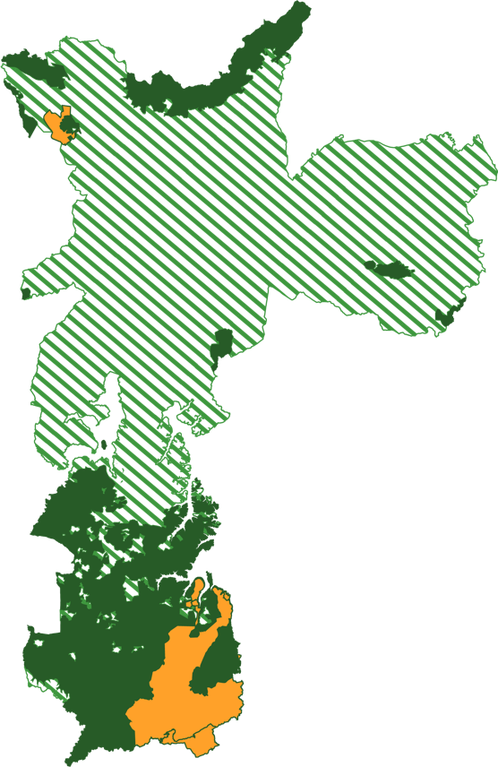
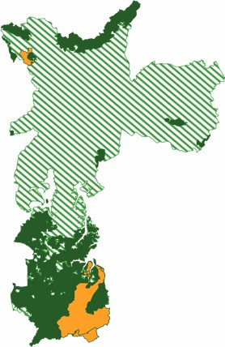

<section class="agriculture" *ngIf="upaData">
  <div class="agriculture-map-area">
    <div class="agriculture-map desktop" title="Mapa da cidade de São Paulo com a marcação das áreas"></div>
    <div class="agriculture-map mobile" title="Mapa da cidade de São Paulo com a marcação das áreas"></div>
    <div class="agriculture-map-info">
      <div class="map-info">
        <category-counter [page]="page" [imgSizeW]="42" [imgSizeH]="42" [data]="data['ProdUnit']"></category-counter>
      </div>
      <div class="map-info mobile">
        <category-counter [page]="page" [imgSizeW]="42" [imgSizeH]="42" [data]="data['ProdUnitAgr']"></category-counter>
      </div>
      <div class="map-info">
        <category-counter [page]="page" [imgSizeW]="42" [imgSizeH]="42" [data]="data['nativeLands']"></category-counter>
      </div>
      <div class="map-info">
        <category-counter [page]="page" [imgSizeW]="42" [imgSizeH]="42" [data]="data['UrbanGardens']"></category-counter>
      </div>
      <div class="map-info desktop">
        <category-counter [page]="page" [imgSizeW]="42" [imgSizeH]="42" [data]="data['ProdUnitAgr']"></category-counter>
      </div>
      <div class="empty-info-area"></div>
      <div class="map-info">
        <category-counter [page]="page" [imgSizeW]="42" [imgSizeH]="42" [data]="data['PublicGardenEquiped']"></category-counter>
      </div>
    </div>
  </div>
  <div class="counters-area gray-area">
    <div class="counters-area-title">Unidades de Produção Agropecuária (UPA)</div>
    <div class="counters-three">
      <category-counter [page]="page" [percentage]="true" [data]="data['WomenLedUnits']"></category-counter>
    </div>
    <div class="counters-three">
      <chart-pie [size]="172" [data]="chartAgeProfile"></chart-pie>
    </div>
    <div class="counters-three">
      <category-counter [page]="page" [percentage]="true" [data]="data['FamilyAgriculture']"></category-counter>
    </div>
  </div>
  <div class="counters-area">
    <div class="counters-area-title">Principais culturas produzidas pelas Unidades de Produção Agropecuária</div>
    <div class="counters-four">
      <category-counter [page]="page" [data]="data['VegetablesAndRoots']"></category-counter>
    </div>
    <div class="counters-four">
      <category-counter [page]="page" [data]="data['Ornamentals']"></category-counter>
    </div>
    <div class="counters-four">
      <category-counter [page]="page" [data]="data['Fruits']"></category-counter>
    </div>
    <div class="counters-four">
      <category-counter [page]="page" [data]="data['Others']"></category-counter>
    </div>
  </div>
  <div class="counters-area gray-area">
    <div class="counters-area-title">Perfil da Produção nas UPAs</div>
    <div class="counters-four">
      <category-counter [page]="page" [ballonFull]="true" [imgSizeW]="105" [imgSizeH]="50" [data]="data['CertifiedOrganic']"></category-counter>
    </div>
    <div class="counters-small">
      <category-counter [page]="page" [imgSizeW]="105" [textBellow]="true" [imgSizeH]="66" [data]="data['AgroecologicalTransition']"></category-counter>
    </div>
    <div class="counters-half">
      <chart-pie class="desktop" [size]="358" [data]="cutivatedArea"></chart-pie>
      <chart-pie class="mobile" [size]="172" [data]="cutivatedArea"></chart-pie>
    </div>
  </div>
</section>

<div
  [fxHide]="upaData"
  fxFlex
  [style.display]="'flex'"
  [style.backgroundColor]="'white'"
  [style.zIndex]="1">
  <div class="spinner"></div>
</div>
